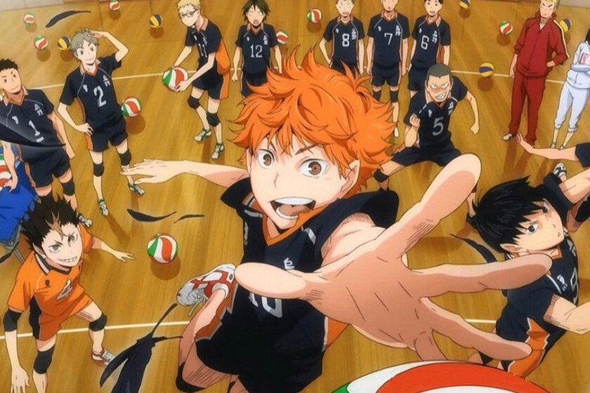

Anime Favorito
Haikyuu, uno de mis animes favoritos me gusto tanto que empece a practicar volley gracias a él
Personaje Favorito del LOL :)

Aurelion Sol solía decorar el vasto vacío del reino celestial con maravillas de su propia creación, pero los Aspectos de Targon lo engañaron para que desvelara los secretos de un sol que él mismo había creado. Su increíble poder se vio canalizado para crear dioses guerreros inmortales que protegieran el aparentemente insignificante mundo de Runaterra. Ahora Aurelion Sol desea recuperar su libertad y regresar a su lugar como maestro del cosmos, para lo que no dudará en hacer caer las mismísimas estrellas del firmamento.
Ark Surivival Evolved

Este es mi juego favorito de todo los tiempos, he jugado tanto, conocido a muchas personas y creado historias con ellos. Por eso es uno de mis juegos favoritos
Streamer Favorito
El mejor streamer de todo Twitch conjuntamente con Masi